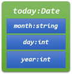

Structure Variables
A structure definition introduces a new type. Once you have the type definition, you can define variables, as you would with any other type.
int n; // uninitialized int variable n
Date today; // uninitialized Date variable today
These two lines instruct the compiler to allocate memory for the int variable n, and for the Date variable today. The Date variable today includes data members that store the values of its month, day and year components.
If you were to draw a box diagram of the variable, it would look something like the picture on the right. Just as the int variable n is uninitialized, day and year in the variable today are also uninitialized.
The month member is default initialized, because it is a library type. This is the opposite of Java. If we were to create a Java Date class with a public String field, that field would be uninitialized, while the primitive types would be default initialized.
Anonymous Structures
You may also create a structure variable along with the definition. This can be useful when you need to group together a pair of variables for immediate use.
struct iPair {int a, b;} p1;
struct {int a, b} p2;Here, p1 is a structure variable, of type iPair. When you do this, you may also omit the structure tag, as is done for the variable p2, creating an anonymous structure.
 This course content is offered under a
CC
Attribution Non-Commercial license. Content in this course
can be considered under this license unless otherwise noted.
This course content is offered under a
CC
Attribution Non-Commercial license. Content in this course
can be considered under this license unless otherwise noted.